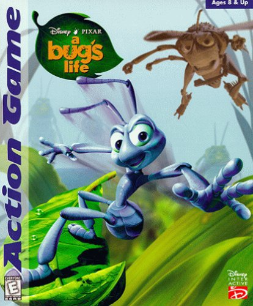
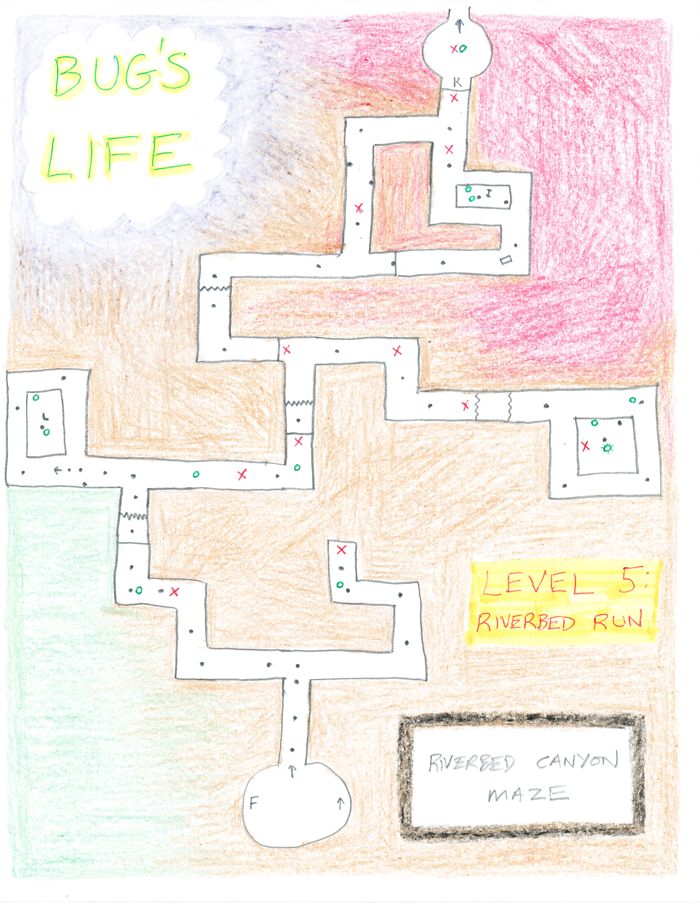

|
 |
  |
| Bug's Life
Bonus Levels • Abdomen bounce 5 bugs without missing any in a level • In The Tunnels, get blueberry and kill 5 grasshoppers without missing any • In Clover Forest, line 5 mushrooms up and bounce to them without hitting the ground Notes: It doesn't matter what order you do the three tasks. A saved game will remember which tasks have already been completed. You cannot access bonus levels if you start with a saved game that already includes those tasks accomplished. When the task is completed, you are immediately taken to the bonus level. Bonus levels cannot be accessed through any menus; this is the only way. Bonus Level 1 & 3 are short and simple. On #1, you just climb up to the top. On #3, to get up on the big white box on the side, you just make a propeller plant near it, and fly through it with a dandelion. The dandelion plant is to the right, and, of course, both plants have red seeds. On #2, getting all the green tokens allows you to get the token for propeller plant ability. The propeller plant will allow you to get two center area tokens above the spiders, so you don't really need to make a dandelion plant on the big white box, or even need the seed in the ice tray. The cannon plant will allow you to get the final item above the spiders and complete the bonus level. |